Para el encargado del salón, coordinación y recepción
Sigue la parte que corresponda a tu evento: una lista con nombres o pases numerados.
Parte A · Cuando tienes una lista de invitados
Parte B · Cuando trabajas con pases numerados
Parte A · Cuando tienes una lista de invitados
PASO 1Abre la dirección de acceso que te entregó InvitacionesPremium. Escribe tu correo y contraseña y selecciona «Iniciar sesión».
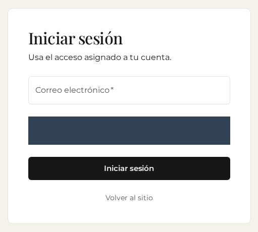
Escritorio · Ejemplo ficticio · Datos privados ocultos con franjas oscuras
Lo que debes verVes los eventos a los que tienes acceso.
Parte A · Cuando tienes una lista de invitados
PASO 2Selecciona «Boda de Mariana y Alejandro» o el nombre del evento que vas a preparar.
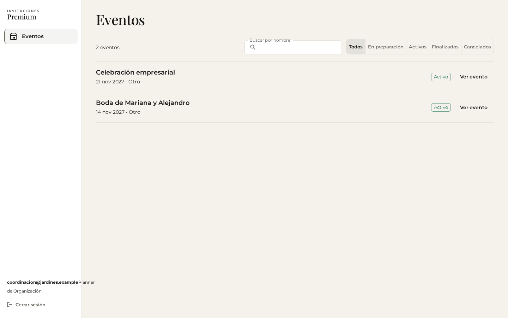
Escritorio · Ejemplo ficticio
Lo que debes verSe abre el evento seleccionado. Comprueba su nombre antes de continuar.
Parte A · Cuando tienes una lista de invitados
PASO 3En «Resumen», revisa las tareas de la lista de invitados.
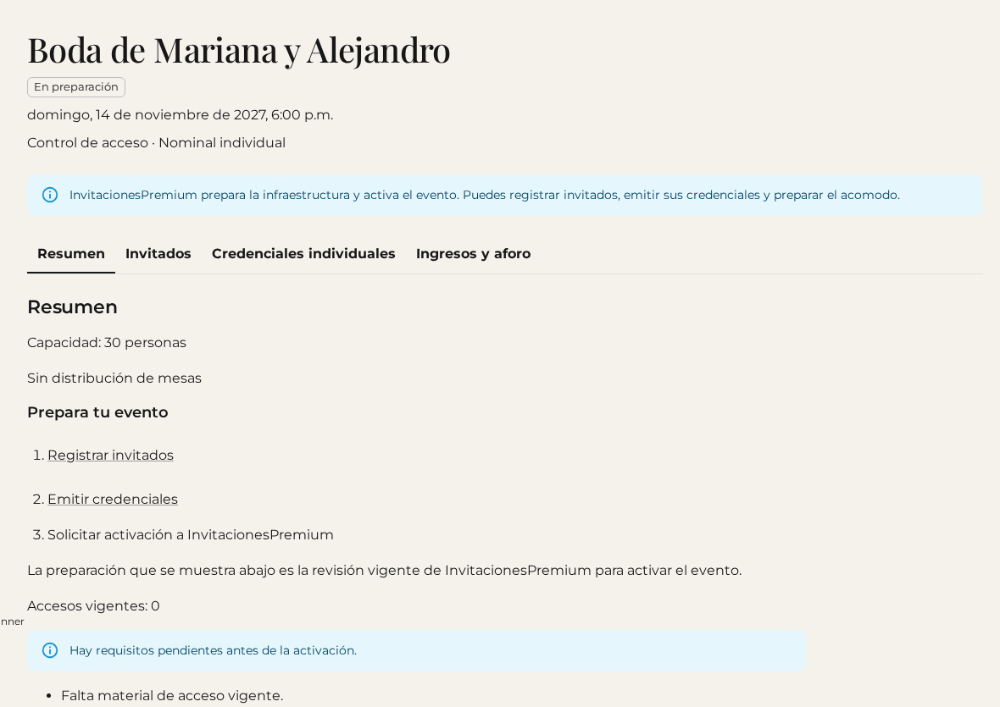
Escritorio · Ejemplo ficticio
Lo que debes verVes qué preparar antes de pedir a InvitacionesPremium que active el evento.
Parte A · Cuando tienes una lista de invitados
PASO 4En «Invitados», escribe el nombre y selecciona «Agregar». El teléfono es opcional en este tipo de evento.
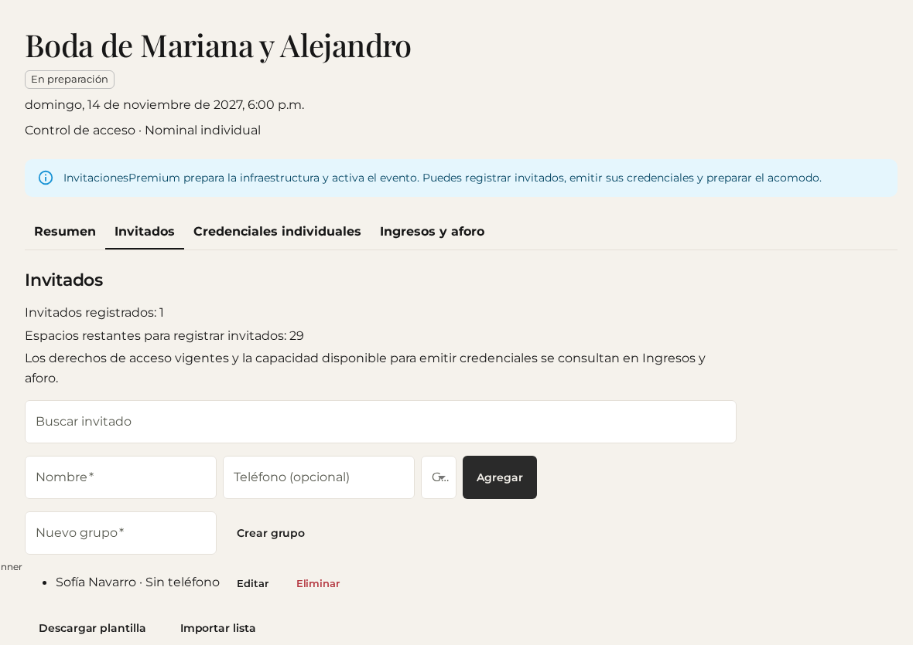
Escritorio · Ejemplo ficticio
Lo que debes verEl nombre aparece en la lista. Repite para cada persona; cada una tendrá su propio código.
Parte A · Cuando tienes una lista de invitados
PASO 5Selecciona «Descargar plantilla», completa el archivo con tus invitados y cárgalo con «Importar lista». Revisa la vista previa y selecciona «Confirmar importación».
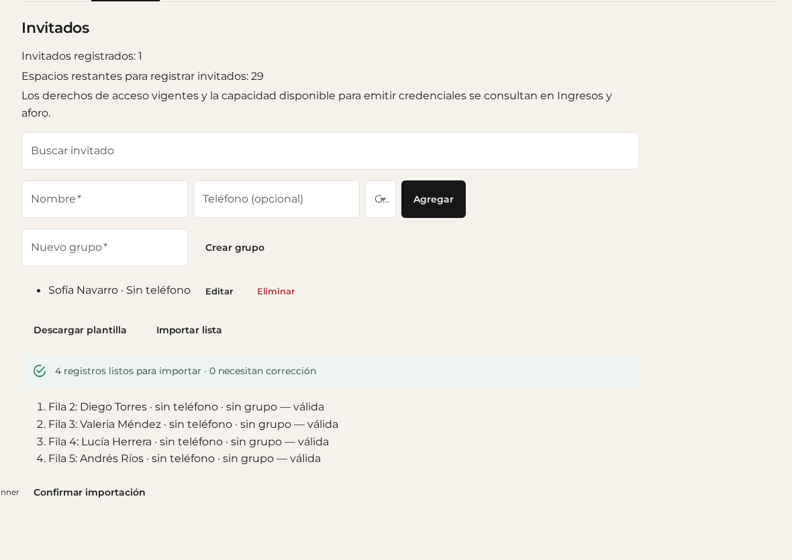
Escritorio · Ejemplo ficticio
Lo que debes verLas filas válidas se agregan a tu lista. Corrige las filas señaladas antes de confirmar. Conserva los encabezados de la plantilla.
Parte A · Cuando tienes una lista de invitados
PASO 6Abre «Credenciales individuales» y selecciona «Emitir credencial» junto a cada invitado.
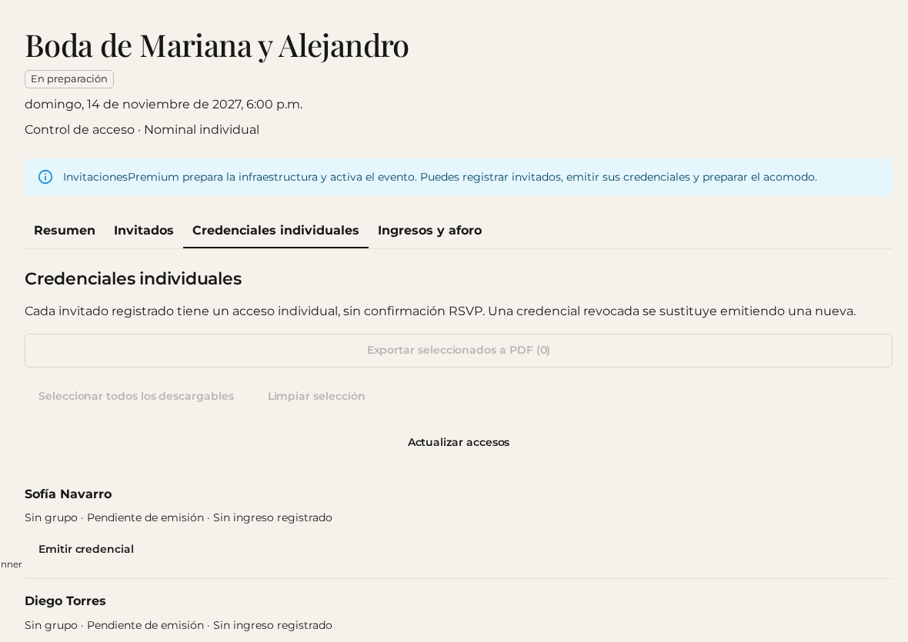
Escritorio · Ejemplo ficticio
Lo que debes verAparece «Credencial vigente» para esa persona. Comprueba que no quede nadie pendiente de emisión.
Parte A · Cuando tienes una lista de invitados
PASO 7Selecciona «Seleccionar todos los descargables» y después «Exportar seleccionados a PDF». También puedes marcar personas por separado.
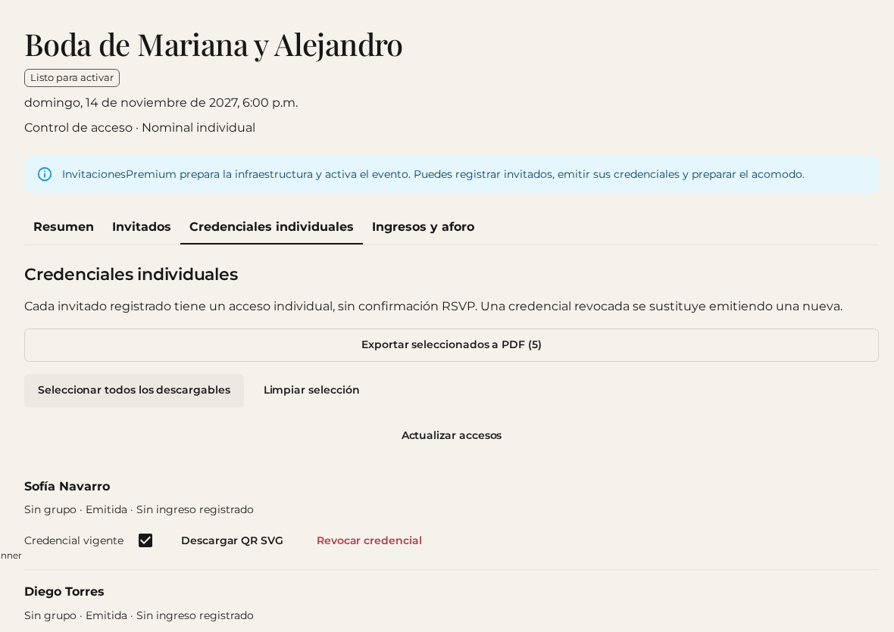
Escritorio · Ejemplo ficticio
Lo que debes verSe descarga el archivo con los códigos seleccionados. Imprime el PDF y entrega a cada persona su propio código. Solicita la activación cuando la lista esté completa.
Parte A · Cuando tienes una lista de invitados
PASO 8Con el evento activo, abre «Staff», escribe un nombre como «Recepción principal» en «Alias del acceso» y selecciona «Crear acceso».
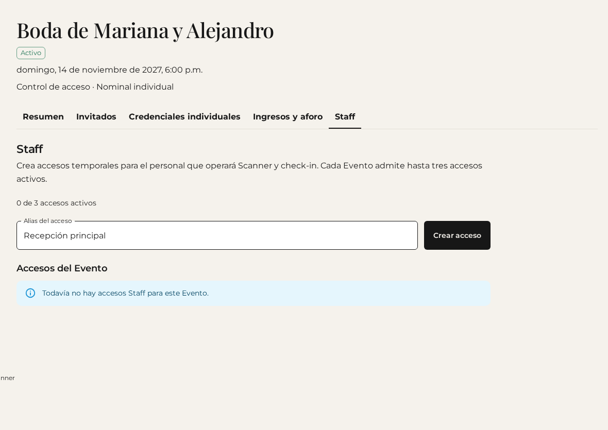
Escritorio · Ejemplo ficticio
Lo que debes verAparece un acceso para ese evento. Puedes tener hasta tres accesos activos.
Parte A · Cuando tienes una lista de invitados
PASO 9Selecciona «Copiar enlace» y envíalo de forma privada a la persona de recepción. También puedes usar «Abrir Scanner» en ese dispositivo.
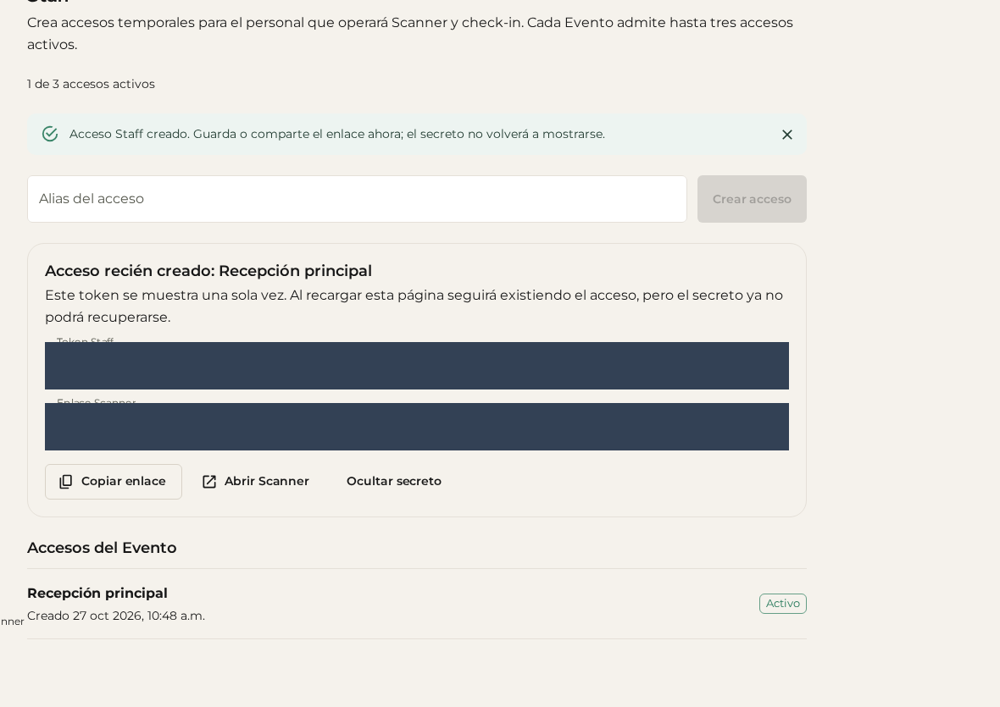
Escritorio · Ejemplo ficticio · Datos privados ocultos con franjas oscuras
Lo que debes verRecepción puede abrir el lector del evento. Guarda y entrega el enlace en ese momento: al ocultarlo o recargar ya no podrás recuperarlo.
Parte A · Cuando tienes una lista de invitados
PASO 10En el teléfono de recepción, abre el enlace recibido y permite el uso de la cámara.
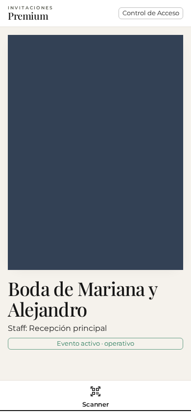
Teléfono · Ejemplo ficticio · Datos privados ocultos con franjas oscuras
Lo que debes verEl Scanner muestra el evento y la vista de cámara. Apunta al código de la persona; necesitas conexión a internet.
Parte A · Cuando tienes una lista de invitados
PASO 11Espera el aviso de ingreso registrado y comprueba el nombre. Selecciona «Siguiente escaneo» para atender a otra persona.
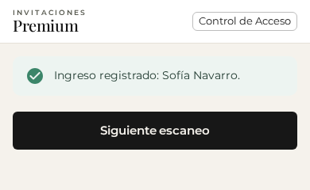
Teléfono · Ejemplo ficticio
Lo que debes verEl ingreso queda registrado una sola vez. Si aparece un rechazo, consulta al encargado antes de permitir la entrada.
Parte A · Cuando tienes una lista de invitados
PASO 12Desde tu cuenta, abre «Ingresos y aforo» y revisa «Ingresados» y «Pendientes».
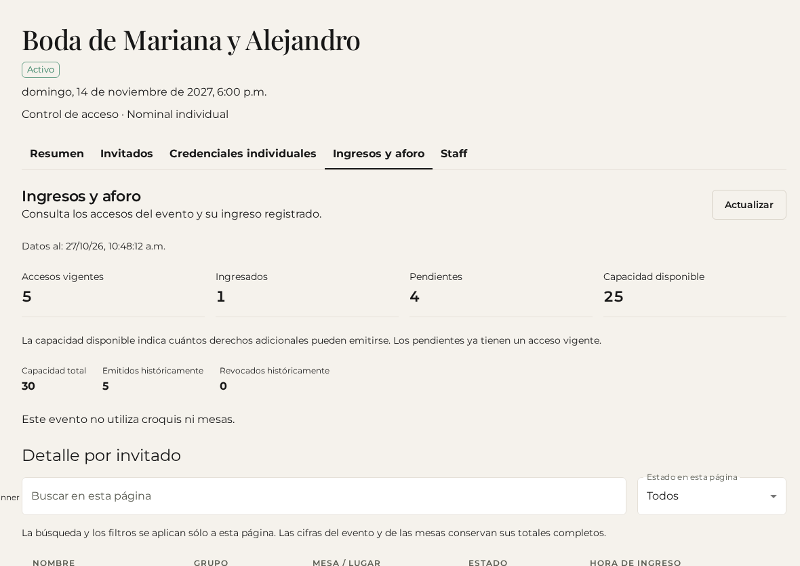
Escritorio · Ejemplo ficticio
Lo que debes verVes cuántas personas llegaron y cuántas faltan. «Capacidad disponible» es cupo para emitir más códigos; no significa personas que faltan por llegar.
Parte B · Cuando trabajas con pases numerados
PASO 13Desde la lista de eventos, selecciona «Celebración empresarial» o el nombre de tu evento con pases.
Escritorio · Ejemplo ficticio
Lo que debes verSe abre el evento correcto; no necesitas registrar nombres.
Parte B · Cuando trabajas con pases numerados
PASO 14Abre «Pases físicos» y revisa los folios.
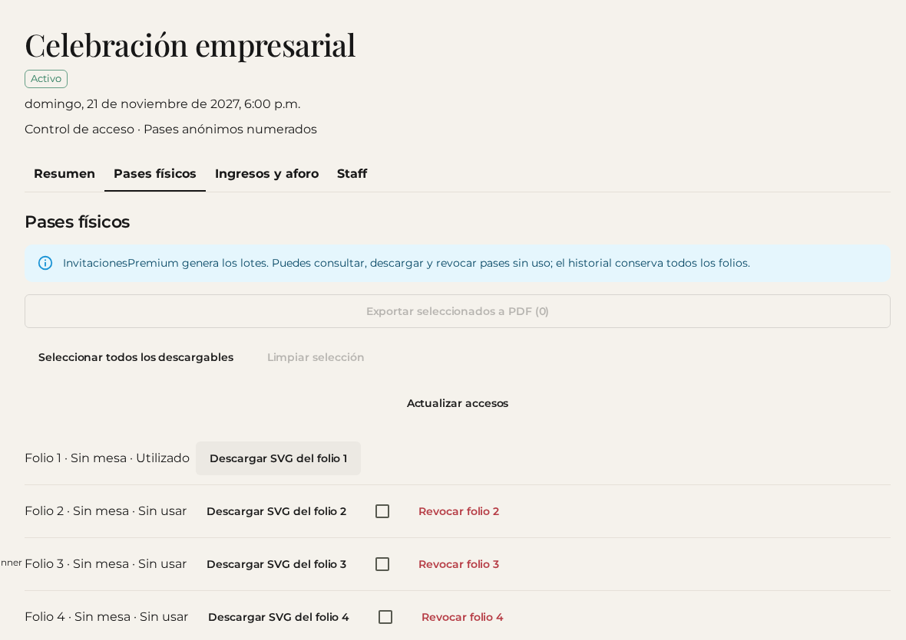
Escritorio · Ejemplo ficticio
Lo que debes verCada folio indica si está sin usar, utilizado o revocado. InvitacionesPremium prepara los lotes; solicita más pases si los necesitas.
Parte B · Cuando trabajas con pases numerados
PASO 15Selecciona «Seleccionar todos los descargables» y luego «Exportar seleccionados a PDF».
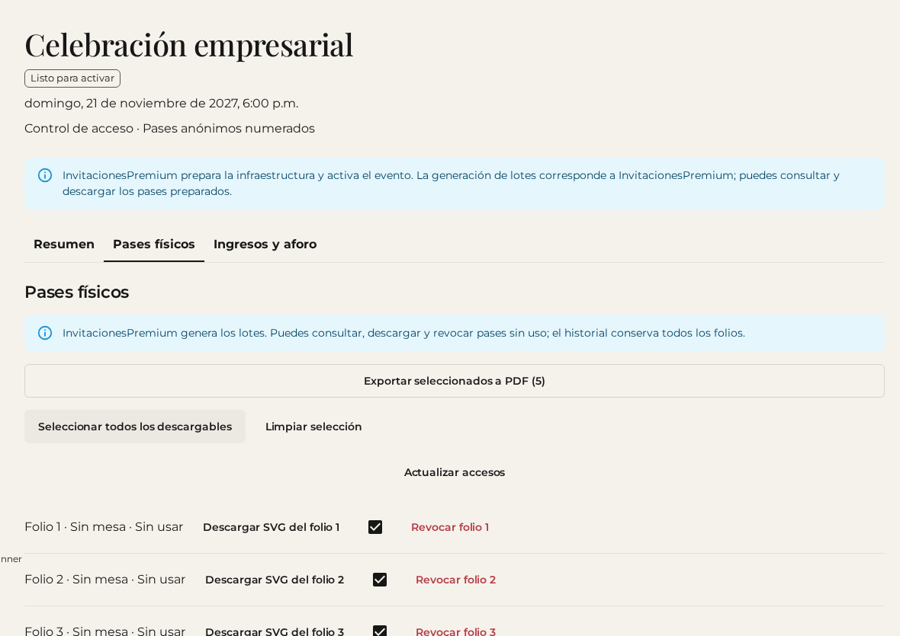
Escritorio · Ejemplo ficticio
Lo que debes verSe descarga el material seleccionado. Imprime una copia por pase y distribúyela de forma controlada.
Parte B · Cuando trabajas con pases numerados
PASO 16Busca los folios que dicen «Sin usar».
Escritorio · Ejemplo ficticio
Lo que debes verPuedes distinguir los pendientes de los utilizados y revocados. Un pase revocado no permite entrar; un pase utilizado no admite otro ingreso.
Parte B · Cuando trabajas con pases numerados
PASO 17Con el evento activo, abre «Staff», crea un acceso con el alias de recepción y selecciona «Copiar enlace». Entrégalo de forma privada al personal autorizado.
Escritorio · Ejemplo ficticio · Datos privados ocultos con franjas oscuras
Lo que debes verRecepción recibe un enlace exclusivo de ese evento. Consérvalo antes de ocultarlo o recargar.
Parte B · Cuando trabajas con pases numerados
PASO 18Abre el enlace de recepción, permite la cámara y apunta al QR del pase.
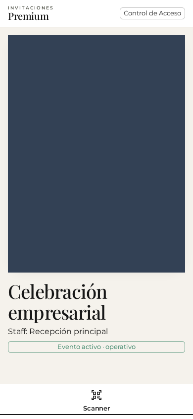
Teléfono · Ejemplo ficticio · Datos privados ocultos con franjas oscuras
Lo que debes verEl lector consulta el pase del evento. Mantén conexión a internet y espera el resultado.
Parte B · Cuando trabajas con pases numerados
PASO 19Comprueba el aviso de ingreso registrado y el número del pase. Selecciona «Siguiente escaneo».
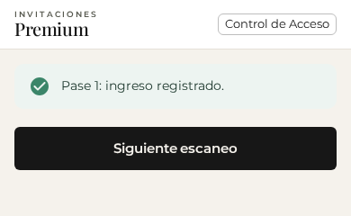
Teléfono · Ejemplo ficticio
Lo que debes verEl pase queda utilizado. Si el lector rechaza el pase, pide ayuda al encargado.
Parte B · Cuando trabajas con pases numerados
PASO 20Desde tu cuenta, abre «Ingresos y aforo».
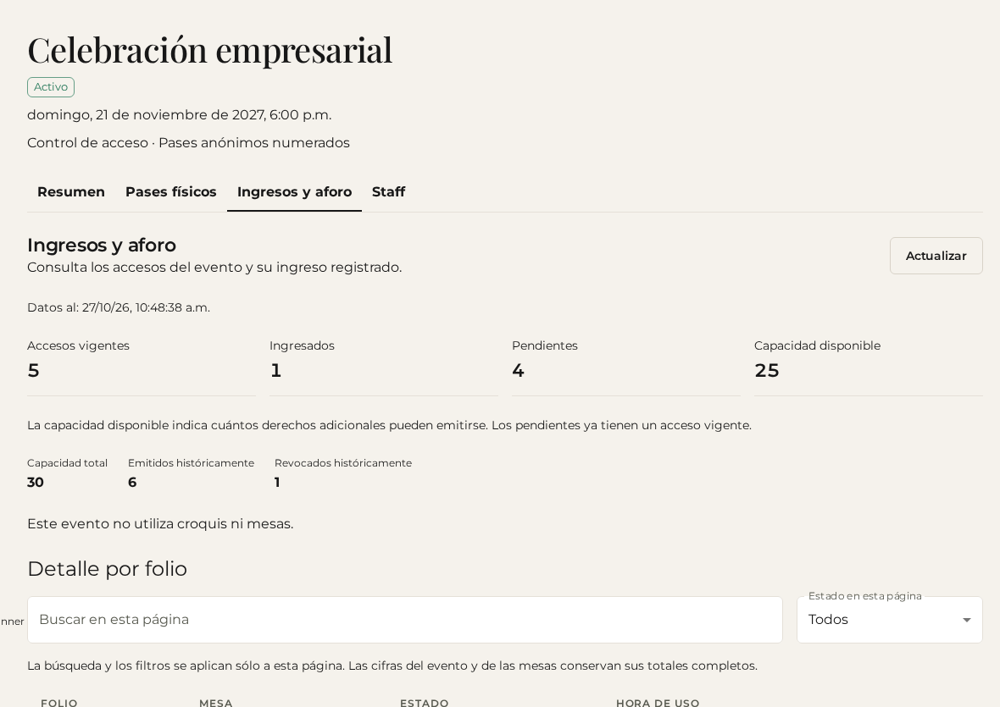
Escritorio · Ejemplo ficticio
Lo que debes ver«Ingresados» cuenta los pases utilizados y «Pendientes» los pases vigentes sin usar. El ejemplo muestra 1 utilizado, 4 pendientes y un folio revocado en el historial.